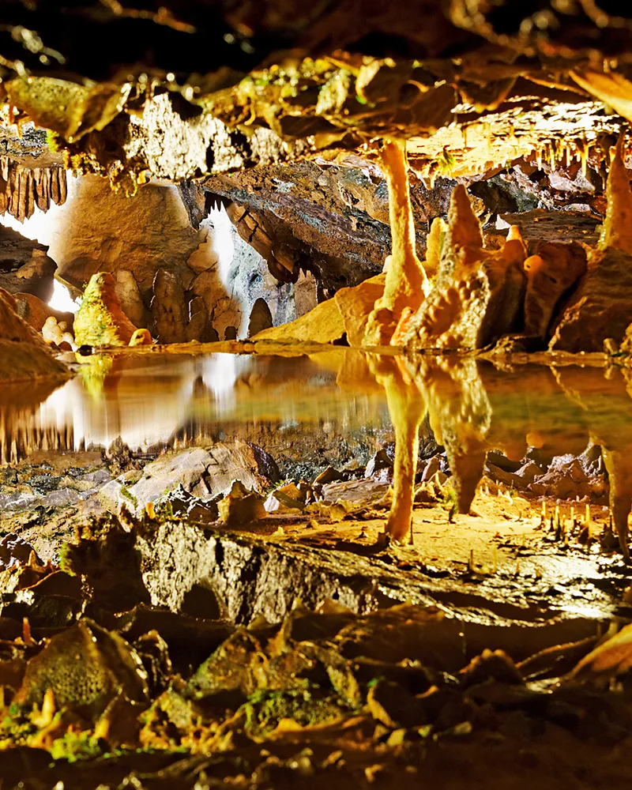

A Tolkien trail: Where to find the real-life Middle-earth
While Tolkien's stories take place in the fictional realm of Middle-earth, the awe-inspiring landscapes of the books, films and TV shows are closer than you might imagine.
The first book in J R R Tolkien's The Lord of the Rings trilogy, The Fellowship of the Ring, was released 70 years ago, in the summer of 1954. However, that's not the only recent milestone for Tolkien's legendarium: the second season of the epic TV series,
Rings of Power
, was released on 29 August 2024.
As befits the ultimate epic fantasy series, the settings are gorgeous, ranging from bucolic, rolling countryside to plunging valleys and desolate deserts. And while Tolkien's stories take place in the fictional realm of Middle-earth, the awe-inspiring landscapes of the books, films and TV shows are not as otherworldly as you might imagine. Many of them are based on real-world locations and visiting them brings to life both the landscapes themselves and the imaginary worlds they inspired Tolkien to create.
The Tolkien Trail: Lancashire, England
While writing The Lord of the Rings in the 1940s, Tolkien lived for a while at Stonyhurst College, a prestigious boarding school in Lancashire where his son was a teacher. The elder Tolkien was known to walk often through the woodlands and rolling hills of the surrounding Ribble Valley, and is thought to have taken inspiration from the place while creating the Shire, the rural homeland of the hobbits.
Today, fans can explore the area on the
Tolkien Trail, which opened in 2002 and takes hikers through the very landscapes that inspired the author. The route starts in the village of Hurst Green at the atmospheric 17th-Century
Shireburn Arms pub, where Tolkien was a regular. It then winds for around seven easy miles through undulating farmland, past the grand buildings of Stonyhurst College, and across historic landmarks like Cromwell's Bridge, an overgrown packhorse bridge once used by Oliver Cromwell in the English Civil War.
Although Tolkien didn't directly document the influence of places along the trail, there are several sources of likely inspiration. The route passes the stately home Hacking Hall where, during Tolkien's time, there was a wooden ferry barge, the Hacking Ferry, that carried people across the River Ribble. In The Fellowship of the Ring, the Bucklebury Ferry (also outside a stately home, Brandy Hall) carries the hobbits across the Brandywine River in similar fashion while they are fleeing a fearsome spectral horseman.
The local landowning family near Stonyhurst, meanwhile, were called the Shireburns – and the similarly named River Shirebourne appears in Tolkien's geography of Middle-earth. Tolkien's maps, meanwhile, depict the convergence of three rivers – the Shirebourne, Withywindle and Brandywine – in a way that exactly mirrors the meeting of the Hodder, Ribble and Calder rivers here in Lancashire. In addition, St Mary's Church in the nearby village of Newchurch-in-Pendle bears an unusual feature: an eye-shaped carving halfway up the tower, known as the Eye of God, which resembles the all-seeing Eye of Sauron from the Lord of the Rings books and movies.
Cheddar Gorge: Somerset, England
Most of the real-life places associated with Tolkien's imaginings of Middle-earth are based on educated guesswork, but there is one place that the writer himself confirmed as a real-life inspiration for The Lord of the Rings.
Tolkien and his wife Edith married in 1916, and honeymooned in the Somerset village of Clevedon. While they were there, they paid a visit to one of the most jaw-dropping landscapes in Britain:
Cheddar Gorge, a sheer limestone valley, pockmarked with caves whose walls are bejewelled with intricate rock formations, stalagmites and stalactites.
The honeymooning author – always married, at least in part, to his work – was taking notes, and in 1971 he confirmed in a private letter (published in 1981 as part of
The Letters of J.R.R. Tolkien) that the caves of Cheddar Gorge inspired the Glittering Caves of Helm's Deep in The Lord of the Rings.
Visit
Gough Cave, the most famous of the caves at Cheddar, and you'll likely recognise elements of Tolkien's description of the Glittering Caves: "columns of white and saffron and dawn-rose … fluted and twisted into dreamlike forms".

Denize Bluffs: Waitomo, New Zealand
LOTR mega-fans will instantly recognise Denize Bluffs, an area of soaring rock formations and wild bush on New Zealand's North Island. In the films, this landscape features in the prequel movie The Hobbit: An Unexpected Journey as the Trollshaws, a hillside forest where Bilbo Baggins encounters some hostile trolls. In the TV show, meanwhile, Denize Bluffs serves as part of the highland home of the Harfoots, the series' hobbit protagonists.
In reality, Denize Bluffs sits on a privately owned sheep and cattle farm that has been in the same family for three generations. Current stewards Warrick and Suzie Denize are very proud of the Lord of the Rings association, and now run
Hairy Feet Waitomo: tours of the property that take in the various locations seen in the films and TV shows and bring them to life with showbiz tales from the production. Tours must be booked in advance. The farm can be found around eight miles west of the town of Piopio.
Stow-on-the-World: Gloucestershire, England
Tolkien was a deeply religious man, and although he always refuted the theory that The Lord of the Rings was a Christian allegory, the work is infused with spirituality.Tolkien spent his professional life as a
professor at the University of Oxford,
and he was known to have often visited the nearby
cotswolds
a picturesque area of golden-stone villages, gently rolling hills and seriously photogenic churches.
Tolkien accompanied his writings with beautiful hand-drawn artworks, one of which depicts the Doors of Durin, a hidden entrance to the inside of a mountain that harbours the Dwarf city of Khazad-dûm. Tolkien’s drawing, although stylised, is almost identical to the north door of St Edward's Church, from the trees that bookmark the entrance to the lamp that hangs above it – giving rise to the longstanding rumour that this is where he found inspiration for his mythical mountain doors.